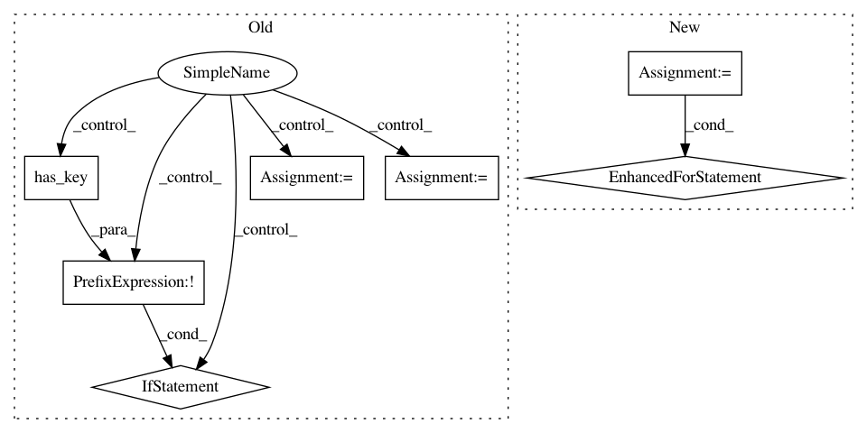

b2cba5c722c3f41244c4c415513ad42fe6325132,nilmtk/pipeline/energynode.py,EnergyNode,process,#EnergyNode#Any#Any#,20
Before Change
// Preference is to calculate energy from
// native Energy data rather than Power data
// so don"t overwrite with Power data.
if not energy.has_key(measurement.ac_type):
energy[measurement.ac_type] = _energy_per_power_series(series)
data_source_rank[measurement.ac_type] = 3 // least favourite
elif isinstance(measurement, Energy):
if measurement.cumulative:
energy[measurement.ac_type] = series.iloc[-1] - series.iloc[0]
data_source_rank[measurement.ac_type] = 1 // favourite
elif data_source_rank.get(measurement.ac_type, 3) > 2:
energy[measurement.ac_type] = series.sum()
data_source_rank[measurement.ac_type] = 2
After Change
Preference: Energy(cumulative) > Energy > Power
energy = {}
for timeframe in df.results["good_sections"].last_results:
energy_for_timeframe = _energy_for_chunk(timeframe.slice(df))
for ac_type, e_for_ac_type in energy_for_timeframe.iteritems():
energy[ac_type] = energy.get(ac_type, 0) + e_for_ac_type
energy_results = EnergyResults()
energy_results.append(df.timeframe, energy)
df.results = getattr(df, "results", {})
df.results[self.name] = energy_results
In pattern: SUPERPATTERN
Frequency: 3
Non-data size: 7
Instances
Project Name: nilmtk/nilmtk
Commit Name: b2cba5c722c3f41244c4c415513ad42fe6325132
Time: 2014-05-07
Author: jack-list@xlk.org.uk
File Name: nilmtk/pipeline/energynode.py
Class Name: EnergyNode
Method Name: process
Project Name: nilmtk/nilmtk
Commit Name: 63ef8bfa3b63090437bd27bf1e04db7ae1eae3cf
Time: 2014-11-27
Author: jack-list@xlk.org.uk
File Name: nilmtk/stats/totalenergy.py
Class Name:
Method Name: get_total_energy
Project Name: CellProfiler/CellProfiler
Commit Name: c65430b778f645fb8bc5ff81f08d8cf8c547a52d
Time: 2009-10-16
Author: thouis@1fc53939-2000-0410-845c-e8453a809027
File Name: pyCellProfiler/cellprofiler/modules/measureimagequality.py
Class Name: MeasureImageQuality
Method Name: test_valid